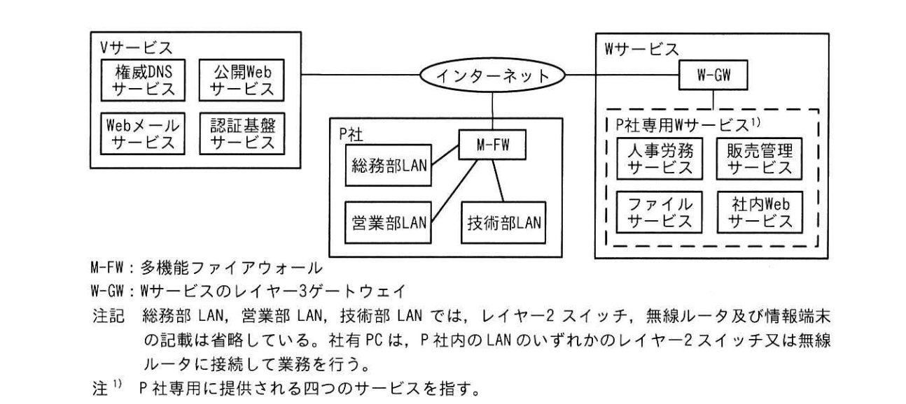
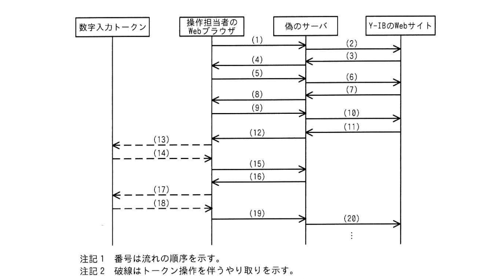
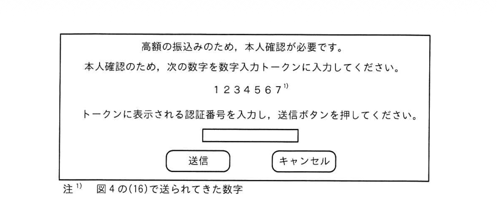

問3 情報システムのセキュリティ強化
P社は、従業員100名の機械部品商社である。P社には、総務部，営業部、技術部が、また、総務部には経理係と情報システム係がある。 従業員には、一人1台の社有PC 及び社有スマートフォン（以下、両者を併せて情報端末といい、スマートフォンをスマホという）を貸与している。さらに，社有スマホの故障、災害発生などの緊急時については、個人所有のスマホの利用を許可している。 情報端末以外のP社の情報システムの管理は、総務部のH部長配下の情報システム係の「主任とFさんが行っている。各部には、情報システム係をサポートする情報セキュリティ推進者がいる。 P社では、表1に示す情報端末などの利用規程を定めている。
| 項番 | 情報端末など | 項目 | 規程 |
|---|---|---|---|
| 1 | 社内PC | （1）初期設定 | 次の初期設定を情報システム係がP社内で行う。 -Q社のマルウェア対策ソフトを導入し、リアルタイムスキャンを有効にする。 -起動時及び起動後1時間ごとにQ社のマルウェア定義ファイル配布サイトに接続して更新するように設定する。 |
| （2）0S | ・ベンダーがサポートしているバージョンX又はバージョンとリを利用する。 -・利用者は、脆弱性修正プログラムがリリースされたら、OSのアップデート機能を用いて、2週間以内に適用する。 | ||
| （3）確認 | ・各部の情報セキュリティ推進者が、利用者が項番1（2）に従って適切に利用しているかどうかを毎月確認する。 | ||
| 2 | 社内共有スマホ、緊急時に利用するスマホ | 1）0S | ・利用者は、弱性修正プログラムがリリースされたら1週間以内に適用する。 |
| （2）アプリケーションプログラム（以下、アプリという） | ・利用者は、毎週スマホのアプリ管理機能で最新化をのスマホ行う。 ・利用者は、アプリ内での認証機能には、可能であれば、生体認証を利用する。 | ||
| （3）スマホのスクリーンロック | ・一定時間操作がない場合は、スクリーンロックが行われるように設定する。 ・スクリーンロックの解除には、可能であれば、生体認証を利用する。 |
注） バージョンXは1年後にサポート終了を迎える。バージョンYはその後継である。
[社有 PCのOSの現状] 社有PCは、バージョンメから、バージョンYへのOSの移行中である。移行は、各部の情報セキュリティ推進者の管理の下、6か月以内に完了させることになっている。
[情報システムの現状] P社では、V社のSaas（以下、Vサービスという）及びW社のSaas（以下、WIサービスという）を使っている。オンプレミスの情報システムはない。P社のネットワーク図を図1に示す。

図1 P社のネットワーク図（抜粋）
M-FWは、ステートフルパケットインスペクション型のファイアウォール機能，DNSキャッシュサーバ機能及び Web プロキシ機能をもつ。 Vサービスの構成要素の概要を表2に示す。
| 構成要素 | 構成要素の概要 |
|---|---|
| 権威DNSサービス | ・権威DNS サーバ機能を提供している。 ・次のプロトコルにも対応している。 [a]：応答にデジタル署名を付与する。 [b]：HTTPSを用いてDNS通信する。 DoT：[c]を用いてDNS通信を暗号化する。 |
| 認証基盤サービス | ・多要素認証認証（以下、MFAという）の利用が可能である。MFA の認証方式は次の3通りである。どれを使うかは契約企業の管理者が設定する。 認証方式1：利用者ごとにあらかじめ登録した1件の電話番号へのSMS 通知による認証 認証方式2：利用者ごとにあらかじめ登録した1台のスマホでの認証アプリを用いた認証 認証方式3：認証の都度、利用者が認証方式1又は2のいずれかを選択 P社では認証方式2を設定している。 ・契約企業の管理者又は利用者は、認証基盤サービスの設定画面（以下、MFA 設定画面という）にアクセスし、必要な情報を設定する。 ・MFA 設定画面への接続元IPアドレス制限が可能である。 |
W-GWには、ファイアウォール機能があり、P社専用Wサービスに接続可能なのはM-FWのグローバルIPアドレスに制限されている。 P社が利用しているグローバルIPアドレスを表3に示す。
| 機器又はサービス | IPアドレス |
|---|---|
| M-FWのインターネット側インタフェース | a1.b1.c1.d1 |
| P社専用Wサービス | a8.b8.08.1~a8.b8. c8.4 |
| Vサービスの認証基盤サービス | a9.b9.c9.d9 |
営業部及び技術部では、取引先から指定されたWebサービス（以下，取引先サービスという）を利用することがある。取引先サービスは複数あり，各取引先サービスで接続元IPアドレス制限を行っている。各取引先サービスでは、M-FWのグローバルIPアドレスからの接続は許可されている。 情報システム係は、社有PCの初期設定後に、図2に示す追加作業を行っている。
1.OS ベンダーの OS アップデート配布サイト、Q社のマルウェア定義ファイル配布サイト、Vサービス、P社専用Wサービス（以下、四つを併せて基本サイトという）及び取引先サービスにアクセスし、正しく初期設定されたかどうかを確認する。
2.Vサービス及びP社専用WサービスのURLをWebブラウザのブックマークに登録する。
[インターネットバンキング変更の検討] 経理係のGさんから情報システム係に、“現在利用しているY銀行のインターネットバンキング（以下、インターネットバンキングをIB,Y銀行のインターネットバンキングを Y-IBという）から2銀行のIB（以下、2銀行のIBをZ-IBという）への変更を検討しているが、情報セキュリティの観点で、Z-IBを利用しても問題ないか教えてほしい”という相談があった。 現在、経理係では、振込みを、操作担当者と操作確認者の2名で行っており、Z-IBへの変更後も同様に2名で行うことを計画している。 IB では取引を認証するための専用のハードウェアトークンとして、数字が入力できるトークン（以下，数字入力トークンという）とカメラ付きトークンの2種類のトークンがあり、Y-IBでは数字入力トークンを、Z-1Bではカメラ付きトークンを使用している。IBにおけるトークンの種別と認証方法の概要を表4に示す。
| トークンの種別 | 認証方法の概要 |
|---|---|
| 数字入カトークン | （省略） |
| カメラ付きトークン | IBは、ログイン後の操作で、Web画面に入力された取引内容を基に2次示コードを生成してWeb画面に表示する。操作担当者がカメラ付きトークンで2次元コードを読み取ると、カメラ付きトークンは、2次元コードを基に認証番号を生成し、取引内容及び認証番号をカメラ付きトークンのデイスプレイに表示する。操作担当者は、認証番号をWeb画面に入力する。 |
IB では、振込先の金融機関名，店名，口座種別，口座番号（以下、金融機関名，店名、口座種別，口座番号を口座情報という）の改ざんによって、攻撃者の用意した口座（以下，攻撃者口座という）に振り込んでしまう被害が発生している。T主任は「さんに、このような被害に遭うリスクをY-IBとZ-IB それぞれで検討し、どちらのIBの方がリスクが低いかを比較するよう指示した。
[攻撃者口座に振り込んでしまうリスクの検討] P社において想定される振込先の口座情報の改ざん手口には、IBにアクセスする社有PCに感染させたマルウェアによる方法などがある。 Fさんは、まず、Y-IBについてリスクを検討した。Y-IBでの振込みの流れを図3に示す。
1.操作担当者が、Web画面で、振込先の金融機関名及び店名を選択する。
2.操作担当者が “次へ”ボタンをクリックした後、Web画面で、振込先の口座種別及び口座番号を入力する。
3．操作担当者が “次へ”ボタンをクリックした後、Web 画面に振込先の口座名義人が表示される。
振込先の金融機関又は操作した時刻によっては表示されないことがある。
4.操作担当者が、Web画面で、振込金額を入力する。
5.操作担当者が“次へ”ボタンをクリックした後、数字入力トークンに振込先の口座番号を入力する。
6.数字入カトークンは、口座番号と時刻情報を基に認証番号を生成し、表示する。操作担当者が、Web画面で、認証番号を入力する。
7.操作担当者が “次へ”ボタンをクリックした後、Web 画面に振込元の口座情報、振込先の口座情報及び振込金額が表示される。
8.操作担当者が、Web画面で"振込”ボタンをクリックすると、振込みが実行される。
注記全ての操作において操作確認者は表示内容と入力内容を確認し、操作担当者と操作確認者の両方が合意したら次に進む。
Fさんは、図3を基に，操作担当者が仮に係のサーバにアクセスした場合に攻撃者口座に振り込まれてしまうまでにやり取りされる情報を考えた。やり取りの流れを図4に，図4でやり取りされる情報を表5に示す。

図4 やり取りの流れ
| 図4の番号 | やり取りされる情報 |
|---|---|
| （2） | 攻撃者口座の金融機関名及び店名 |
| （6） | 攻撃者口座の口座種別及び口座番号 |
| （7） | 攻撃者口座の口座名義人 |
| （8） | （7）の各文字を空白に置き換えた文字列 |
| （10） | 攻撃者による書換え後の振込金額 |
| （13） | [d] |
| （14） | 認証番号 |
| （16） | 図5のポップアップ画面 |
| （17） | [e] |
| （18） | 認証番号 |

図5 ポップアップ画面
図4の（16）～（19）は図3にない流れなので、操作担当者及び操作確認者が図3の流れを理解していれば、違和感を覚える可能性が高い。しかし、図3の流れを理解していなければ、気付くことなくだまされてしまうリスクも排除できない。 次に、Z-IB についてリスクを検討した。2-IBの場合，振込先の口座情報を改ざんされたとしても、改ざん後の口座情報などの取引内容がカメラ付きトークンのディスプレイに表示されるので、口座情報が改ざんされたことに気付きやすい。 Fさんは、これらの検討結果を踏まえ、攻撃者口座に振り込んでしまうリスクは 2ーIBの方が低いとT主任に報告した。「主任は報告の内容に加えて他の機能も比較し、P社での利用において 2-IB のセキュリティ対策に問題がないことを確認した。T主任はGさんに、Y-IBより 2-1Bの方が被害に遭うリスクが低く、利用しても問題がないと回答し、経理係ではY-IBから2-IBに変更することにした。
[リモートワークの検討] 各部から育児，看護及び介護を理由とした、自宅でのリモートワーク導入の要望が挙がったことから、H部長は，経理係のIBの利用及び情報システム係の情報システムの管理はリモートワークの対象外にする前提で、全従業員のリモートワークに必要なインフラを検討するよう！主に指示した。また、リモートワーク実施に当たって必要となる情報セキュリティ対策を併せて検討するように指示した。 「主任と「さんは、最初に、リモートワークに必要なインフラを検討することにした。まず、R社のモバイルルータ（以下、R-MRという）及びR-MR を用いるインターネット接続サービス（以下、Rサービスという）について調査した。その結果、Rサービスではインターネットに接続したときに割り当てられるグローバルIPアドレスに、固定グローバルIPアドレスを割りてることはできないことが分かった。次に、HTTPSを用いた VPNサービスであるK社セキュリティサービス（以下、Kサービスという）を調査した。Kサービスの利用方法は図6のとおりである。
専用のソフト（以下、Kソフトという）を用いて接続する。
2．認証には、Vサービスの認証基盤サービスをIdPとする SAMLを利用できる。
3.K サービス接続時に、接続元 PCのOSのバージョン、OS の脆弱性修正プログラム適用状況，マルウェア定義ファイルのバージョン（以下、三つを併せてPC 情報という）をチェックし、接続の可否を判定できる。アカウント名、PCのシリアル番号、PC情報及び接続可否はログに記録される。接続を許可する PC情報の条件は契約企業の管理者アカウントで設定できる。
4.K サービス経由でのインターネットアクセス時の送信元IPアドレスとして、契約者専用のKサービス用固定グローバルIPアドレスを指定することができる。
5.インターネットアクセス時のURL フィルタリングサービスがある。HTTPS 通の場合、Kサービスと接続元 PCとの間のHTTPS 通，Kサービスとインターネットのアクセス先との間のHTTPS 通のそれぞれを終端し、KサービスでURLフィルタリングを行う。
6.URL フィルタリングサービスの除外リストにFQDNを登録すると、そのサイト宛てのHTTPS 通は、Kサービスでは HTTPS通の終端を行わない。
7.契約企業の管理者アカウントでログの検索及び参照ができる。
8.契約企業向けに用意された設定画面（以下、Kサービス設定サイトという）へのアクセスを許可する接続元IPアドレスを設定することができる。
9.K ソフトは、利用者が、PCのWeb ブラウザからKサービス設定サイトにHTTPS でアクセスしてダウンロードし、インストールする。インストール時には、契約企業を識別するIDを設定する。
次に、「主任とFさんは、リモートワーク用の新規社有PC 導入時の追加の初期設定手順及びP社におけるリモートワークでのKサービスの利用方針を検討し、検討結果をそれぞれ図7、図8にまとめた。
1.利用者が認証基盤サービスにアカウントをもっていない場合、情報システム係が認証基盤サービスでアカウントの作成を行う。
2．情報システム係は、あらかじめダウンロードしておいた最新の弱性修正プログラムを社有PCに適用する。
3.項番 1でアカウントが作成された場合、利用者は社有スマホに認証アプリをインストールする。利用者は自身のアカウントを使い、P社内から社有PCを使ってMFA 設定画面にログインし、社有スマホの認証アプリを登録する。
4.利用者はP社内から社有 PCを使ってKサービス設定サイトにアクセスし、Kソフトのダウンロード及びインストールを行う。
5.利用者はKサービス経由で、図2を行う。
1.リモートワーク時には、Kサービスを利用する。
2.Kサービスの管理者は「主任と「さんとする。
3.認証にVサービスのMFAを利用する。
4.図6の項番3については、表1の項番1（2）を満たしていないPC からの接続を拒否するように設定する。
5．図6の項番4を利用する。
6.図6の項番5を利用する。
7.図6の項番6については、URLフィルタリングサービスの除外リストに、基本サイトのFQDN，取引先サービスのFQDNを登録する。
8.図6の項番8については、①Kサービス設定サイトへのアクセスはP社内だけからできるよう制限する。
T主任とFさんは検討を進め、Kサービスを用いれば、リモートワーク用の社有PCがP社内の LANに接続されている場合でもHTTPS通のURL フィルタリングサービスが適用できると考えた。そのため、リモートワーク時に限らず、P社出勤時も経理係のIBの利用及び情報システム係の情報システムの管理を除き、社有PCでのK サービスの利用を必須にする方針とした。 FさんとT主任は、まとめた内容をH部長に報告し、了承を得た。
[段階的な利用計画] 「主任と「さんは、Rサービス及びKサービスを、「主任とFさんが情報システムの管理以外の業務に利用する先行利用と、全従業員で利用する全体利用の2段階で行うことにした。 Fさんは、図8以外に必要となる変更について、次の案を「主任に報告した。 （1） W社に設定変更を依頼する。 （2） M-FWのファイアウォール機能では社内からのHTTP通信を禁止とし、HTTPS通の宛先はKサービスだけを許可する。 （3） 各取引先サービスについて、次の依頼を取引先に行う。 依頼：[f]
「主任は，（2）について、問題を指摘し、許可する宛先の追加を指示した。Fさんは、②追加する宛先を「主任に報告し、了承を得た。
「主任は、これまでの検討結果をH部長に報告し、先行利用実施の許可を得た。
[先行利用の実施とOS 移行の施策]先行利用では、利用中に社有スマホが故障し、認証ができないという問題が発生した。そこで、H部長とも相談し，社有スマホの故障時でもKサービスが利用できるように、MFA設定画面で次の二つを行った。 ・管理者のアカウントで、認証方式を表2の認証方式3に変更する。 ・先行利用の利用者アカウントについては、[g]
T主任とFさんは、1か月間、Kサービスを社内から利用し、基本サイトの利用などに問題がないことを確認した。
次に、「主任とFさんは、社有PCをRサービスに接続し、Kサービスを利用することにした。1か月間利用し、同様に問題がないことを確認した。
T主任と「さんは、現状，社有PCのOSの移行が滞っていることから、③情報システム係がKサービスを活用して移行を促進させる施策を考えた。
T主任は、先行利用の振返り及び OS 移行の施策をH部長に報告した。H部長は、Kサービスがリモートワーク及び情報セキュリティの強化に有効であると判断し、リモートワークの導入を進めていくことにした。
設問1[情報システムの現状］について答えよ。 （1） 表2中の[a]に入れる適切な字句を、英字10字以内で答えよ。 （2） 表2中の[b],[c]に入れる適切な字句を、それぞれ英字25字以内で答えよ。
設問2 表5中の[d],[e]に入れる適切な字句を解答群の中からそれぞれ選び、記号で答えよ。なお、解答は重複して選んでもよい。 解答群 ア 攻撃者口座の口座番号 イ攻撃者による書換え前の口座番号
設問3 図8中の下線①について、設定内容を具体的に答えよ。
設問4 [段階的な利用計画]について答えよ。 （1） 本文中の[f]に入れる依頼の内容を具体的に答えよ。（2） 本文中の下線②について、追加する宛先を答えよ。
設問5[先行利用の実施と 0S移行の施策]について答えよ。 （1） 本文中の[g]に入れる設定内容を具体的に答えよ。 （2） 本文中の下線③について、施策を具体的に答えよ。
問3 リモートワーク環境のセキュリティ（VPN・DNS）
設問1(1)
解答例
a＝DNSSEC
DNSSEC（DNS Security Extensions）はDNS応答にゾーン管理者のデジタル署名（RRSIG）を付与し、受信側で公開鍵（DNSKEY）を使って検証することで応答の完全性・真正性を保証する。キャッシュポイズニング（Kaminskyアタック等）対策として有効。VサービスはP社ドメインのDNSを管理するため、権威DNSサーバにDNSSEC機能が求められる。
設問1(2)
解答例
b＝DoH（DNS over HTTPS）またはDoT（DNS over TLS） c＝TLS
DNSクエリはデフォルトでUDP/53平文通信のため盗聴・改ざんのリスクがある。DoH（DNS over HTTPS）はポート443でHTTPSにDNSクエリをカプセル化し、盗聴・改ざん・ブロック対策になる。DoT（DNS over TLS）はポート853でTLSによりDNS通信を暗号化する。`c＝TLS`はDoTの説明中に使われる語（「[c]を用いてDNS通信を暗号化する」）。リモートワーク環境でISPのDNSが改ざんされるリスクを軽減できる。
設問2
解答例
d＝イ（攻撃者による書換え前の口座番号） e＝ア（攻撃者口座の口座番号）
Y-IBでは数字入力トークンに「振込先口座番号」を入力して認証番号を生成する（f(口座番号,時刻)）。MITM攻撃では攻撃者の口座番号に書換え済みのため、銀行はf(攻撃者口座番号,t)の認証番号を期待する。(13)[d]=攻撃者サーバから表示される「トークンに入力する番号」=イ（元の口座番号をあえて表示して正規フローに見せかける）。実際には攻撃者口座番号をトークンに入力させるべきところ、被害者に気づかれないよう元の番号を見せる。(17)[e]=フォーム送信される実際の口座番号=ア（攻撃者口座）。Z-IBのカメラ付きトークンはトークン内で取引内容を検証するためMITMでの口座書換えを本人が気づきやすい。
設問3
解答例
Kサービス設定サイトへのアクセスが許可される接続元IPアドレスをa1.b1.c1.d1（M-FWのグローバルIPアドレス）に制限する
Kサービスの設定サイトはVPN・URLフィルタリング等の全社セキュリティポリシーを制御する最も重要な管理画面。この画面が外部から操作されると攻撃者がURL許可リストを変更したり接続許可条件を緩和できる。P社内のみ（M-FWのグローバルIP=a1.b1.c1.d1）に接続元制限することで、インターネット経由での不正操作を防ぐ。リモートワーク中の管理者もKサービス経由でP社内IPになるため問題ない。
設問4(1)
解答例
f＝各取引先サービスへの接続を許可するIPアドレスとして、P社専用のKサービス用固定グローバルIPアドレスを登録してもらう
Kサービスの利用方針（図8の5番）で「Kサービス用固定グローバルIPアドレスを送信元として使用」する設定を利用。取引先サービスは接続元IPを制限しており、従来はM-FWのグローバルIPが許可されていた。リモートワーク後はKサービス経由になるため、送信元IPが変わる。取引先に対してKサービス用固定IPの追加登録を依頼することで、P社利用者がリモートワーク中でも取引先サービスに接続できる。
設問4(2)
解答例
Z-IB（経理係のインターネットバンキング）、OSベンダーのOSアップデート配布サイト、Vサービスの認証基盤サービス（a9.b9.c9.d9）、Kサービス設定サイト
M-FWのFW機能をHTTPS宛先=Kサービスのみに設定すると、Kサービスに接続できなければ何にも接続できなくなる。問題点：①Kサービス認証にVサービスMFAが必要→認証基盤サービスにアクセスできないとKソフトが起動できない；②OSアップデートはKサービス外でも実行できる必要がある；③Z-IBは経理係IB業務が対象外とされているため直接接続が必要；④Kサービス設定サイト自体もKサービス経由でない接続が必要な場合がある。これらはKサービス確立前または除外リストに含める。
設問5(1)
解答例
認証方式1の電話番号として、個人所有スマホの電話番号を登録する
先行利用中に社有スマホ故障でKサービスにログインできなくなったため、管理者が認証方式3（認証方式1または2を選択）に変更し、各利用者の認証方式1のバックアップとして個人所有スマホの電話番号を登録する。SMS-OTPにより社有スマホが使えない緊急時でも認証を完了できる。ただし退職時の登録解除徹底が必要というリスクを内包する。
設問5(2)
解答例
Kサービス接続時のログからOSがバージョンXの社有PCを抽出し、アカウント名から利用者を特定し、利用者の所属する部の情報セキュリティ推進者に報告して、バージョンYへの移行を促してもらう
Kサービスは接続PC情報（OSバージョン）をログに記録する（図6の3番）。情報システム係がKサービスのログを検索・参照（図6の7番）し、OSがバージョンXのPCを一覧化できる。アカウント名から対象利用者を特定し、各部の情報セキュリティ推進者経由で個別に移行を促す。表1の項番1(3)「毎月情報セキュリティ推進者が確認する」の仕組みと連動させることで、ログを活用した能動的な移行促進施策になる。